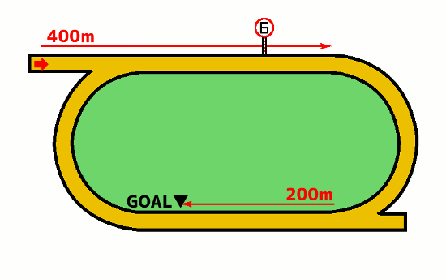

無料メルマガで連日の無料予想と秋G1の極秘情報もGETしよう!!
無料メルマガ登録フォーム
最終更新日：
YouTubeで登録者数6万人のうまめし競馬チャンネルを運営しているうまめし君です！
佐賀競馬場の900mコースの特徴を分析して、競馬予想に役立つ傾向を調べてみたいと思います。佐賀900mコースは馬場半周の右回りカーブになっています。
もくじ
競馬場特徴の一覧に戻る
札幌 函館 福島 新潟 東京 中山 中京 京都 阪神 小倉 地方 海外
無料メルマガで連日の無料予想と秋G1の極秘情報もGETしよう!!
無料メルマガ登録フォーム
佐賀ダ900mコースでの枠順と脚質別の成績を見ていきましょう。
1枠の成績は（1着16回・2着21回・3着14回・着外145回）で、勝率は8パーセント・連対率は18パーセント・複勝率は26パーセントとなっています。 逃げ警戒
脚質別の馬券に絡むパーセンテージは逃げ：81％・先行：35％・差し：8％・追込：3％となっております。
2枠の成績は（1着23回・2着17回・3着29回・着外127回）で、勝率は11パーセント・連対率は20パーセント・複勝率は35パーセントとなっています。好枠 逃げ警戒
脚質別の馬券に絡むパーセンテージは逃げ：85％・先行：47％・差し：5％・追込：5％となっております。
3枠の成績は（1着17回・2着19回・3着26回・着外134回）で、勝率は8パーセント・連対率は18パーセント・複勝率は31パーセントとなっています。 逃げ警戒
脚質別の馬券に絡むパーセンテージは逃げ：87％・先行：42％・差し：9％・追込：4％となっております。
4枠の成績は（1着19回・2着16回・3着23回・着外138回）で、勝率は9パーセント・連対率は17パーセント・複勝率は29パーセントとなっています。 逃げ警戒
脚質別の馬券に絡むパーセンテージは逃げ：76％・先行：46％・差し：4％・追込：0％となっております。
5枠の成績は（1着20回・2着27回・3着21回・着外181回）で、勝率は8パーセント・連対率は18パーセント・複勝率は27パーセントとなっています。 逃げ警戒
脚質別の馬券に絡むパーセンテージは逃げ：75％・先行：44％・差し：7％・追込：0％となっております。
6枠の成績は（1着38回・2着37回・3着32回・着外190回）で、勝率は12パーセント・連対率は25パーセント・複勝率は36パーセントとなっています。好枠 逃げ警戒 道悪実績
脚質別の馬券に絡むパーセンテージは逃げ：94％・先行：51％・差し：13％・追込：2％となっております。
7枠の成績は（1着24回・2着32回・3着26回・着外225回）で、勝率は7パーセント・連対率は18パーセント・複勝率は26パーセントとなっています。 逃げ警戒
脚質別の馬券に絡むパーセンテージは逃げ：80％・先行：50％・差し：6％・追込：4％となっております。
8枠の成績は（1着39回・2着27回・3着25回・着外218回）で、勝率は12パーセント・連対率は21パーセント・複勝率は29パーセントとなっています。好枠 逃げ警戒 道悪実績
脚質別の馬券に絡むパーセンテージは逃げ：93％・先行：40％・差し：8％・追込：0％となっております。
下の表は枠を考慮しない脚質成績
| 逃げ | 先行 | 差し | 追込 | |
|---|---|---|---|---|
| 勝 率 | 52% | 10% | 1% | 0% |
| 連対率 | 75% | 26% | 4% | 0% |
| 複勝率 | 85% | 45% | 8% | 2% |

900mという短い距離設定のため、言うまでもなく逃げ馬が圧倒的に有利になります。
当然ですが、短距離なので逃げ馬がスタミナ切れを起こさずに、そのまま押し切る展開になるケースが多いのが大きな理由です。
基本的にA級やB級などの比較的佐賀の中では強いレベルの馬が出走するレースでは900m戦自体が行われないので、そもそも追い込みポジションから差し切る末脚を持っている馬が皆無だという事も理由の1つです。
無料メルマガで連日の無料予想と秋G1の極秘情報もGETしよう!!
無料メルマガ登録フォーム
佐賀ダ900mコースでの人気別の成績を見ていきましょう。
1番人気の成績は（1着88回・2着44回・3着29回・着外35回）で、勝率は44パーセント・連対率は67パーセント・複勝率82パーセントとなっています。
脚質別の馬券に絡むパーセンテージは逃げ：97％・先行：79％・差し：41％・追込：0％となっております。
2番人気の成績は（1着45回・2着44回・3着42回・着外65回）で、勝率は22パーセント・連対率は45パーセント・複勝率66パーセントとなっています。
脚質別の馬券に絡むパーセンテージは逃げ：95％・先行：72％・差し：14％・追込：20％となっております。
3番人気の成績は（1着28回・2着45回・3着30回・着外93回）で、勝率は14パーセント・連対率は37パーセント・複勝率52パーセントとなっています。
脚質別の馬券に絡むパーセンテージは逃げ：80％・先行：61％・差し：25％・追込：0％となっております。
4番人気の成績は（1着15回・2着21回・3着22回・着外137回）で、勝率は7パーセント・連対率は18パーセント・複勝率29パーセントとなっています。
脚質別の馬券に絡むパーセンテージは逃げ：66％・先行：30％・差し：16％・追込：0％となっております。
5番人気の成績は（1着5回・2着18回・3着31回・着外139回）で、勝率は2パーセント・連対率は11パーセント・複勝率27パーセントとなっています。
脚質別の馬券に絡むパーセンテージは逃げ：70％・先行：41％・差し：9％・追込：8％となっております。
6番人気の成績は（1着8回・2着12回・3着12回・着外157回）で、勝率は4パーセント・連対率は10パーセント・複勝率16パーセントとなっています。
脚質別の馬券に絡むパーセンテージは逃げ：63％・先行：27％・差し：5％・追込：0％となっております。
7番人気の成績は（1着2回・2着4回・3着10回・着外157回）で、勝率は1パーセント・連対率は3パーセント・複勝率9パーセントとなっています。
脚質別の馬券に絡むパーセンテージは逃げ：16％・先行：18％・差し：4％・追込：0％となっております。
8番人気の成績は（1着0回・2着3回・3着8回・着外151回）で、勝率は0パーセント・連対率は1パーセント・複勝率6パーセントとなっています。
脚質別の馬券に絡むパーセンテージは逃げ：0％・先行：21％・差し：0％・追込：3％となっております。
無料メルマガで連日の無料予想と秋G1の極秘情報もGETしよう!!
無料メルマガ登録フォーム
佐賀ダ900コースでの騎手成績を詳細に見ていきましょう。
飛田愛騎手の成績は30-18-14-69で、1~4番人気での成績は28-15-10-25で、5番人気以下の人気薄での騎乗成績は2-3-4-44でした。
石川慎騎手の成績は18-13-22-50で、1~4番人気での成績は17-9-13-25で、5番人気以下の人気薄での騎乗成績は1-4-9-25でした。
山口勲騎手の成績は17-11-11-35で、1~4番人気での成績は17-11-10-22で、5番人気以下の人気薄での騎乗成績は0-0-1-13でした。
山下裕騎手の成績は15-12-8-66で、1~4番人気での成績は15-8-8-24で、5番人気以下の人気薄での騎乗成績は0-4-0-42でした。
竹吉徹騎手の成績は12-10-14-70で、1~4番人気での成績は12-9-10-24で、5番人気以下の人気薄での騎乗成績は0-1-4-46でした。
山田貴騎手の成績は11-11-12-52で、1~4番人気での成績は10-10-6-19で、5番人気以下の人気薄での騎乗成績は1-1-6-33でした。
金山昇騎手の成績は10-15-13-79で、1~4番人気での成績は10-12-8-23で、5番人気以下の人気薄での騎乗成績は0-3-5-56でした。
加茂飛騎手の成績は10-9-12-77で、1~4番人気での成績は9-8-9-14で、5番人気以下の人気薄での騎乗成績は1-1-3-63でした。
出水拓騎手の成績は9-10-5-99で、1~4番人気での成績は7-9-4-24で、5番人気以下の人気薄での騎乗成績は2-1-1-75でした。
倉富隆騎手の成績は8-6-6-38で、1~4番人気での成績は7-5-3-9で、5番人気以下の人気薄での騎乗成績は1-1-3-29でした。
田中純騎手の成績は7-6-5-62で、1~4番人気での成績は5-5-3-11で、5番人気以下の人気薄での騎乗成績は2-1-2-51でした。
田中直騎手の成績は6-9-8-77で、1~4番人気での成績は6-6-4-13で、5番人気以下の人気薄での騎乗成績は0-3-4-64でした。
長田進騎手の成績は6-5-5-61で、1~4番人気での成績は5-4-1-5で、5番人気以下の人気薄での騎乗成績は1-1-4-56でした。
川島拓騎手の成績は6-17-11-87で、1~4番人気での成績は5-12-8-22で、5番人気以下の人気薄での騎乗成績は1-5-3-65でした。
村松翔騎手の成績は5-8-4-30で、1~4番人気での成績は4-8-3-6で、5番人気以下の人気薄での騎乗成績は1-0-1-24でした。
小松丈騎手の成績は5-5-3-48で、1~4番人気での成績は3-3-0-6で、5番人気以下の人気薄での騎乗成績は2-2-3-42でした。
中山蓮騎手の成績は3-6-12-93で、1~4番人気での成績は3-5-5-11で、5番人気以下の人気薄での騎乗成績は0-1-7-82でした。
石川倭騎手の成績は3-3-2-5で、1~4番人気での成績は3-2-2-5で、5番人気以下の人気薄での騎乗成績は0-1-0-0でした。
青海大騎手の成績は2-4-13-89で、1~4番人気での成績は1-4-6-12で、5番人気以下の人気薄での騎乗成績は1-0-7-77でした。
及川烈騎手の成績は1-1-0-10で、1~4番人気での成績は0-0-0-0で、5番人気以下の人気薄での騎乗成績は1-1-0-10でした。
吉本隆騎手の成績は1-1-2-19で、1~4番人気での成績は1-1-1-5で、5番人気以下の人気薄での騎乗成績は0-0-1-14でした。
澤田龍騎手の成績は0-0-0-1で、1~4番人気での成績は0-0-0-0で、5番人気以下の人気薄での騎乗成績は0-0-0-1でした。
筒井勇騎手の成績は0-0-0-1で、1~4番人気での成績は0-0-0-1で、5番人気以下の人気薄での騎乗成績は0-0-0-0でした。
田野豊騎手の成績は0-0-1-0で、1~4番人気での成績は0-0-1-0で、5番人気以下の人気薄での騎乗成績は0-0-0-0でした。
長尾翼騎手の成績は0-0-0-4で、1~4番人気での成績は0-0-0-0で、5番人気以下の人気薄での騎乗成績は0-0-0-4でした。
西森将騎手の成績は0-0-0-7で、1~4番人気での成績は0-0-0-1で、5番人気以下の人気薄での騎乗成績は0-0-0-6でした。
松木大騎手の成績は0-0-0-1で、1~4番人気での成績は0-0-0-0で、5番人気以下の人気薄での騎乗成績は0-0-0-1でした。
松井伸騎手の成績は0-2-1-7で、1~4番人気での成績は0-1-0-0で、5番人気以下の人気薄での騎乗成績は0-1-1-7でした。
小林凌騎手の成績は0-3-1-18で、1~4番人気での成績は0-0-0-4で、5番人気以下の人気薄での騎乗成績は0-3-1-14でした。
山本聡騎手の成績は0-0-0-1で、1~4番人気での成績は0-0-0-1で、5番人気以下の人気薄での騎乗成績は0-0-0-0でした。
山本咲騎手の成績は0-0-0-2で、1~4番人気での成績は0-0-0-0で、5番人気以下の人気薄での騎乗成績は0-0-0-2でした。
合林海騎手の成績は0-1-4-47で、1~4番人気での成績は0-1-2-4で、5番人気以下の人気薄での騎乗成績は0-0-2-43でした。
魚住謙騎手の成績は0-0-0-2で、1~4番人気での成績は0-0-0-0で、5番人気以下の人気薄での騎乗成績は0-0-0-2でした。
宮内勇騎手の成績は0-0-0-2で、1~4番人気での成績は0-0-0-0で、5番人気以下の人気薄での騎乗成績は0-0-0-2でした。
無料メルマガで連日の無料予想と秋G1の極秘情報もGETしよう!!
無料メルマガ登録フォーム
どの種牡馬の産駒がどの程度馬券に絡んでいるのか、種牡馬ごとに馬券に絡んだ回数をカウントしたのが以下の表です。血統の系統別に馬名を色分けしています。
■ヘイルトゥリーズン系
■サンデーサイレンス系
■ミスプロ系・キングマンボ系
■ノーザンダンサー系
■エーピーインディ系
| 種牡馬名 | 勝利回数 |
|---|---|
| モズアスコット | 5 |
| ホッコータルマエ | 5 |
| ドレフォン | 5 |
| ダノンレジェンド | 5 |
| サトノアラジン | 5 |
| サウスヴィグラス | 5 |
| モーニン | 4 |
| マインドユアビスケッツ | 4 |
| フェノーメノ | 4 |
| パイロ | 4 |
| ロードカナロア | 3 |
| ミッキーアイル | 3 |
| ベストウォーリア | 3 |
| ノーブルミッション | 3 |
| トゥザグローリー | 3 |
| ダンカーク | 3 |
| タリスマニック | 3 |
| スマートファルコン | 3 |
| シャンハイボビー | 3 |
| ゴールドアクター | 3 |
| 種牡馬名 | 勝利回数 |
|---|---|
| モズアスコット | 5 |
| ホッコータルマエ | 5 |
| ドレフォン | 5 |
| ダノンレジェンド | 5 |
| サトノアラジン | 5 |
| サウスヴィグラス | 5 |
| モーニン | 4 |
| マインドユアビスケッツ | 4 |
| フェノーメノ | 4 |
| パイロ | 4 |
| ロードカナロア | 3 |
| ミッキーアイル | 3 |
| ベストウォーリア | 3 |
| ノーブルミッション | 3 |
| トゥザグローリー | 3 |
| ダンカーク | 3 |
| タリスマニック | 3 |
| スマートファルコン | 3 |
| シャンハイボビー | 3 |
| ゴールドアクター | 3 |
| ケイムホーム | 3 |
| カレンブラックヒル | 3 |
| ロージズインメイ | 2 |
| リアルスティール | 2 |
| メイショウボーラー | 2 |
| マツリダゴッホ | 2 |
| マクフィ | 2 |
| ヘニーヒューズ | 2 |
| ファインニードル | 2 |
| ビッグアーサー | 2 |
| ビーチパトロール | 2 |
| バゴ | 2 |
| トランセンド | 2 |
| トーセンジョーダン | 2 |
| スクワートルスクワート | 2 |
| スクリーンヒーロー | 2 |
| ジャングルポケット | 2 |
| ジャスタウェイ | 2 |
| シニスターミニスター | 2 |
| サトノクラウン | 2 |
| エスポワールシチー | 2 |
| エイシンフラッシュ | 2 |
| エーシントップ | 2 |
| アイルハヴアナザー | 2 |
| Exceed And Excel | 2 |
| ヴィットリオドーロ | 1 |
| ヴァンセンヌ | 1 |
| ワールドエース | 1 |
| ロジャーバローズ | 1 |
| ローレルゲレイロ | 1 |
| ロードバリオス | 1 |
| レッドファルクス | 1 |
| レーヴミストラル | 1 |
| リオンディーズ | 1 |
| リアルインパクト | 1 |
| リーチザクラウン | 1 |
| ミスターメロディ | 1 |
| マジェスティックウォリアー | 1 |
| ホークビル | 1 |
| ブラックタイド | 1 |
| フリオーソ | 1 |
| フォーウィールドライブ | 1 |
| パドトロワ | 1 |
| バンブーエール | 1 |
| ネロ | 1 |
| ニューイヤーズデイ | 1 |
| ニシケンモノノフ | 1 |
| ドゥラメンテ | 1 |
| トビーズコーナー | 1 |
| トウケイヘイロー | 1 |
| トゥザワールド | 1 |
| ディーマジェスティ | 1 |
| ディープブリランテ | 1 |
| タイセイレジェンド | 1 |
| ゼンノロブロイ | 1 |
| スワーヴリチャード | 1 |
| スピルバーグ | 1 |
| スノードラゴン | 1 |
| ストロングリターン | 1 |
| シルバーステート | 1 |
| ショウナンカンプ | 1 |
| シビルウォー | 1 |
| シゲルカガ | 1 |
| ザファクター | 1 |
| サトノダイヤモンド | 1 |
| ゴールドドリーム | 1 |
| キンシャサノキセキ | 1 |
| キングヘイロー | 1 |
| キングズベスト | 1 |
| キングカメハメハ | 1 |
| キズナ | 1 |
| ガルボ | 1 |
| カリフォルニアクローム | 1 |
| オルフェーヴル | 1 |
| エピファネイア | 1 |
| エイシンヒカリ | 1 |
| ウルトラカイザー | 1 |
| インカンテーション | 1 |
| アレスバローズ | 1 |
| アルデバラン２ | 1 |
| アジアエクスプレス | 1 |
| Street Boss | 1 |
| Into Mischief | 1 |
| Iffraaj | 1 |
| 種牡馬名 | 勝利回数 |
|---|---|
| ダノンレジェンド | 4 |
| サウスヴィグラス | 4 |
| マインドユアビスケッツ | 3 |
| ホッコータルマエ | 3 |
| フェノーメノ | 3 |
| パイロ | 3 |
| ドレフォン | 3 |
| モーニン | 2 |
| ミッキーアイル | 2 |
| ベストウォーリア | 2 |
| ファインニードル | 2 |
| トゥザグローリー | 2 |
| トーセンジョーダン | 2 |
| ダンカーク | 2 |
| スクワートルスクワート | 2 |
| ジャングルポケット | 2 |
| ジャスタウェイ | 2 |
| シャンハイボビー | 2 |
| サトノアラジン | 2 |
| ゴールドアクター | 2 |
| ヴィットリオドーロ | 1 |
| ヴァンセンヌ | 1 |
| ロードバリオス | 1 |
| ロージズインメイ | 1 |
| レッドファルクス | 1 |
| リオンディーズ | 1 |
| リアルスティール | 1 |
| リアルインパクト | 1 |
| モズアスコット | 1 |
| ミスターメロディ | 1 |
| マクフィ | 1 |
| ヘニーヒューズ | 1 |
| フリオーソ | 1 |
| フォーウィールドライブ | 1 |
| ビッグアーサー | 1 |
| ビーチパトロール | 1 |
| パドトロワ | 1 |
| バンブーエール | 1 |
| バゴ | 1 |
| ノーブルミッション | 1 |
| ドゥラメンテ | 1 |
| トランセンド | 1 |
| トビーズコーナー | 1 |
| トウケイヘイロー | 1 |
| トゥザワールド | 1 |
| ディーマジェスティ | 1 |
| ディープブリランテ | 1 |
| タリスマニック | 1 |
| スワーヴリチャード | 1 |
| スマートファルコン | 1 |
| スクリーンヒーロー | 1 |
| シルバーステート | 1 |
| ショウナンカンプ | 1 |
| シニスターミニスター | 1 |
| サトノダイヤモンド | 1 |
| ゴールドドリーム | 1 |
| ケイムホーム | 1 |
| キンシャサノキセキ | 1 |
| キングヘイロー | 1 |
| キングズベスト | 1 |
| ガルボ | 1 |
| カレンブラックヒル | 1 |
| エピファネイア | 1 |
| エスポワールシチー | 1 |
| エイシンフラッシュ | 1 |
| エーシントップ | 1 |
| アルデバラン２ | 1 |
| アジアエクスプレス | 1 |
| アイルハヴアナザー | 1 |
| Into Mischief | 1 |
| Iffraaj | 1 |
| Exceed And Excel | 1 |
無料メルマガで連日の無料予想と秋G1の極秘情報もGETしよう!!
無料メルマガ登録フォーム
※当ページへのリンクや、論文・SNSでの紹介などは大歓迎です。単なるコピペパクリなど引用の法的要件を満たさない記事泥棒的な転載は禁止です。